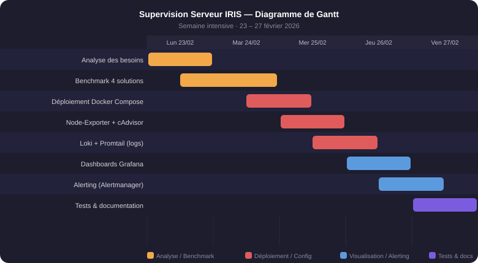

// Administration système — Semaine thématique
Supervision Serveur IRIS
📅 Semaine du 23 fév 2026
Documentation technique
Mise en place d'une stack de supervision complète sur un serveur Proxmox (IRIS) hébergeant plusieurs VMs en production : métriques système, conteneurs, logs centralisés et alerting. Objectif : visibilité temps réel et remontée d'alertes vers l'équipe sans accès distant permanent au serveur.
Veille technologique — benchmark de 4 solutions (Zabbix, PRTG, Checkmk, stack Prometheus/Grafana) avec grille comparative (fonctionnalités, complexité, coût, intégration Docker). Solution retenue : stack open-source Prometheus. Déploiement via Docker Compose : Prometheus + Node-Exporter + cAdvisor + Loki + Promtail. Construction de dashboards Grafana (infrastructure, conteneurs, logs). Configuration Alertmanager avec règles CPU/RAM/disk. Tests de charge et documentation finale.
Compétences BTS SIO SISR mobilisées
Livrables
- Stack Docker Compose (Prometheus + Grafana + Loki)
- Dashboards Grafana (infra + conteneurs + logs)
- Documentation de déploiement
- Rapport de tests de charge
Critères d'évaluation
Modalités de clôture
Tests de charge validés. Alertes déclenchées et reçues (simulation). Documentation livrée à l'équipe IRIS.
Gestion des risques
| Risque identifié | Probabilité | Impact | Mesure de mitigation |
|---|---|---|---|
| Prometheus ne scrape plus les cibles (node-exporter inaccessible) | Moyenne | Élevé | Alertes sur up == 0 dans Alertmanager + dashboard Grafana dédié à la santé des exporters |
| Saturation disque par les volumes Loki (logs non purgés) | Moyenne | Moyen | Politique de rétention Loki configurée (7 jours) + alerte sur occupation disque > 80 % |
| Alertmanager mal configuré — alertes non reçues | Moyenne | Élevé | Test de tir d'alerte simulé lors de la recette (charge CPU artificielle) avant mise en production |
| Conflit de ports Docker sur le serveur Proxmox | Faible | Moyen | Inventaire des ports existants avant déploiement + ports non-standards documentés |
PRA / PCA
docker-compose up -d sur le serveur ProxmoxLa configuration complète de la stack (fichiers docker-compose.yml, prometheus.yml, alertmanager.yml, dashboards Grafana exportés en JSON) est versionnée sur Git. En cas de panne, le redéploiement se fait en moins de 15 minutes : clone du dépôt + docker-compose up -d + import des dashboards. La perte de métriques historiques est acceptable car les données de supervision ne sont pas des données métier critiques.
Annexes
